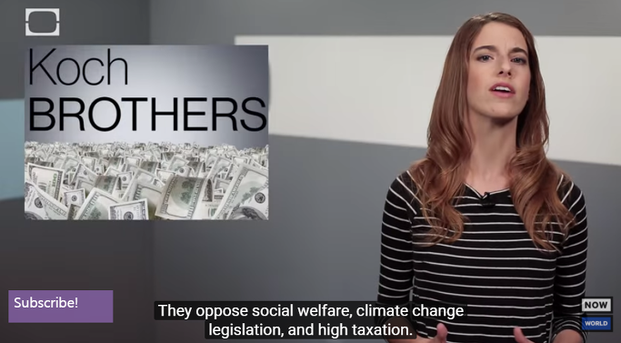
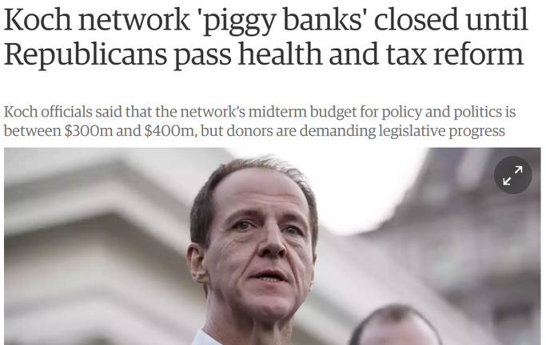
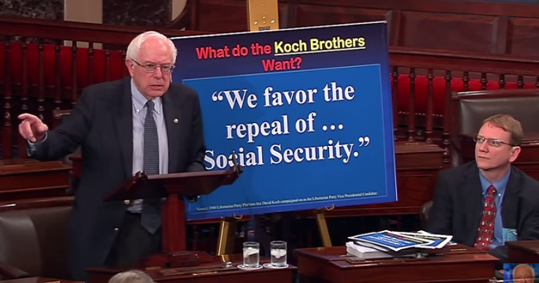
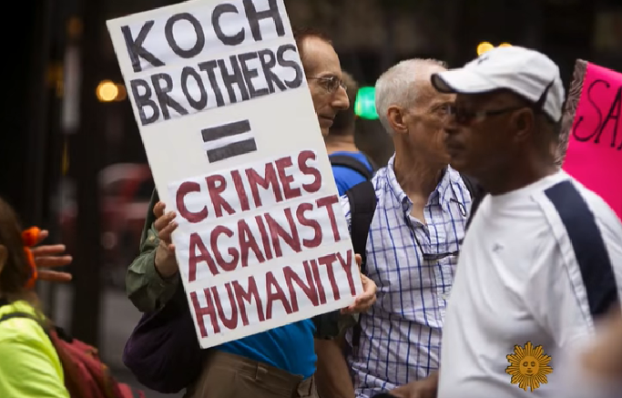

코크 형제가 기분이 좋지 않은 이유
게시: 2017-09-23T21:12:22+09:00
코크(Koch) 형제라는 분들이 있습니다. 새로운 석유 정제법을 발명하여 Koch Industries라는 석유 회사를 일으킨 Fred C. Koch라는 화학자이자 기업가의 아들들인 이 분들은 원래 4형제인데 자기들끼리의 이권 다툼으로 소송전을 벌인 끝에, 지금은 코크 인더스트리즈를 찰스(Charles G. Koch)와 데이빗(David H. Koch)이 각각 절반씩 소유하고 있습니다. 이 두 형제를 흔히 코크 형제라고 일컫습니다.
코크 형제에 대한 기본적인 설명은 아래 유튜브를 추천합니다. 뉴욕식으로 빠르게 말하는 여성분의 말을 제가 의외로 잘 알아듣길래 '내가 영어 실력이 늘었나'라고 생각했는데 가만 보니 영어 캡션이 달려 있어서 제가 무의식 중에 '들은 것이 아니라 읽은 것'이더군요.


이 분들은 굉장한 부자입니다. 이 두 형제가 소유한 코크 인더스트리즈는 상장되지 않은 사기업인데, 그런 사기업 중에서는 곡물기업인 카길(Cargill))사 다음으로 큰 기업이고, 2016년 포브스지에 의해 미국에서 가장 부유한 가족으로 선정된 바 있습니다.
이 분들은 사업 못지 않게 정치에도 많은 노력을 기울이는데, 직접 정치를 하거나 하지는 않고, 주로 보수 공화당 측에 선거 자금을 직접 대거나 선거 자금 모금 운동에 돈을 대고, 보수주의 씽크탱크 그룹에 자금을 대는 형식으로 정계에 막강한 영향력을 끼칩니다.
그런데 최근 이 분들의 심기가 좋지 않답니다. 아래 가디언지의 보도에 따르면, 코크 재단의 회기 중 정치 및 정책 자금은 3억~4억 달러에 달하지만, 오바마케어의 폐지와 기업 및 부자들에 대한 감세가 조속히 이루어지지 않으면 돼지저금통(piggy bank)은 닫힐 수 밖에 없다는 것이 코크 형제들이 지배하는 재단의 입장이라고 합니다. 이 형제들이 기분이 좋지 않은 이유는 간단합니다. 이제 대통령과 상원, 하원이 모두 공화당 손아귀에 들어있는데, 어찌 오바마케어 폐지와 감세안 통과가 이렇게 지지부진하냐 라는 것이지요.

코크 형제들은 엄청난 부자이니 당연히 감세를 바랄 것입니다. 그런데 왜 이 부자 형제들은 중산층과 저소득층을 위한 의료보험제도인 오바마케어 폐지를 그토록 집요하게 요구하는 것일까요 ? 코크 형제들을 공개적으로 비난하는 몇 안되는 정치가 중 하나인 버니 샌더스에 따르면, 코크 형제들은 정부 주도의 모든 복지 프로그램을 다 폐지하기를 원한다고 말했다고 합니다. 이 형제들은 가난한 사람들을 미워할 만한 이유가 뭔가 있는 것일까요 ?


(위동영상은 2014년 버니 샌더스가 상원에서 코크 형제들의 정책에 대해 연설하는 장면입니다.)
사실 코크 형제들이 정말 꽉 막힌 보수꼴통 악의 화신 노친네들은 아닙니다. 놀랍게도, 이 형제들은 낙태와 동성혼을 지지하며, 흑인 학생들을 위한 장학기금인 United Negro College Fund에 2천5백만 달러를 기부하기도 했습니다. 뿐만 아닙니다. 이들은 9/11 사태 와중에 부시가 만든 미국판 국가보안법인 Patriat Act에 반대했고, 중동에서 미군의 철수를 요구하기도 했습니다. 그러나 이들은 대표적인 기후 변화 방지 정책 반대자(climate change deniers)들로서, 기후 변화를 막기 위한 조약과 법안을 폐지하기 위한 단체에 돈을 대고 있습니다.
이 분들은 오바마 정부가 추진했던 최저임금 인상에 대해 어떤 입장일까요 ? 예, 당연히 반대했습니다. 오히려 최저임금을 없애면 가난한 사람들에게 더 도움이 될 것이라고 주장했습니다.
결국 이 형제들은 매우 일관된 방향성을 가진 아주 솔직한 자유경제주의자라고 할 수 있습니다. 국가의 안보나 번영, 이념 같은 것은 관심 밖이고, 관심있는 것은 오로지 자신들의 금전적 이익인 것이지요. 왜 이들이 오바마케어 같은 복지혜택을 폐지하거나 축소하려고 노력할까요 ? 표면적인 이유는 의료 및 복지 혜택의 확대는 국가 재정 부실과 의료 체계의 붕괴를 일으켜 결국 서민들의 삶을 더 피폐하게 만들기 때문이라고 합니다.
그러나 실제로는 더 간단합니다. 저소득층에 대한 복지 혜택이 늘어날 수록, 그 경제적 부담이 자기들 같은 부유층에게 결국 돌아온다는 것을 잘 알기 때문입니다. 흔히 안 좋은 뜻으로 쓰이는 말, 즉 '호의가 계속 되면 권리로 생각한다'라는 말이 꼭 틀린 것은 아닙니다. 투표로 정권이 바뀌는 민주주의 국가에서, 사회적 복지 혜택은 늘이기는 쉬워도 줄이는 것은 매우 어렵습니다. 결국 정권 유지와 국가 재정 붕괴를 막기 위해서는 복지 축소보다는 세금을 늘려야 합니다. 세금은 돈에 붙는 것이므로, 결국 돈을 많이 가진 층에서 더 받아가는 수 밖에 없습니다. 결국 저소득층의 복지 비용은 부유층에서 부담하게 되는 것이지요.

실제로 오바마케어는 부유층에 대한 세금 상승을 불러왔습니다. 연간 20만불 이상(결혼 가구의 경우 25만불 이상)의 소득에는 0.9%의 메디케어 세금이 더 붙었고, 2010년의 추가 법안에 의해 20만불 이상(결혼 가구의 경우 25만불 이상)의 투자 소득에 대해서는 3.8%의 소득이 추가로 더 붙었습니다. 뿐만 아니라 캐딜락 세금(Cadillac tax)이라는 것이 새로 생겨, 1년에 10,800불(가족의 경우 29,500불)을 초과하는 의료보험료에 대해서는 40%의 소비세가 붙게 되는데, 이는 여러가지 효과를 노린 세금이지만 기업 입장에서는 결국 기업들의 세금 우대조치를 감소시켜 기업들의 부담을 증가시키는 일이었습니다.
https://www.cigna.com/health-care-reform/cadillac-tax
코크 형제들은 그것을 막기 위해 돈을 아낌없이 쓰고 있습니다. 각종 재단과 씽크 탱크에 자금을 지원하여 자신들의 주장에 이론적 기반을 닦고, 언론과 정치인을 통해 끊임없이 국민 대중을 현혹하는 것입니다.
코크 형제들 같은 사람들은 우리나라에도 있습니다. 전경련은 이런저런 우익단체와 우익매체, 자유주의경제연구소 등에 자금을 지원하며 황당한 주장을 펼쳤습니다. 거기에 국정원도 한몫 한 것으로 밝혀지고 있지요. 이런 활동의 우리나라만의 특징은 자신들의 이해에 방해가 되는 집단은 무조건 종북 빨갱이로 몰아댄다는 점에 있습니다. 이들에 따르면 대한민국 대통령도 김정은의 운전사 노릇을 자처하는 북한의 앞잡이입니다. 상식적으로 문재인 같은 제1 권력자가 뭐가 아쉬워서 자발적으로 김정은 부하 노릇을 하겠습니까 ? 아직 독재시대의 정권 유지용 반공 교육에 세뇌된 세대가 남아 있기 때문에 그런 수법이 먹힌다고 생각하나 봅니다. 너무 유치하고 한심합니다.
저는 생산성 향상없이 단순히 복지 확대를 통해 모든 사람이 다 경제적으로 풍족하게 살 수 있다고는 생각하지 않습니다. 그러나 다른 것은 몰라도 당장의 생존을 위한 의료 혜택과, 내일의 희망을 위한 교육에는 나랏돈을 더 투입해야 한다고 생각합니다. 이를 위해 세금을 더 올려야 한다면 저는 더 낼 용의가 있고, 그것이 다음 세대를 위해 더 나은 사회를 만드는 길이라고 믿습니다. 결과가 평등하지 않더라도 최소한 기회는 평등해야 하고, 집안에 아픈 사람 있을 경우 집안이 망하는 일은 없어야 한다고 주장하는 것이 과격주의라고는 생각하지 않습니다.